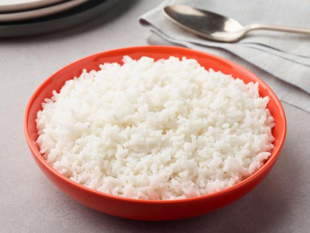

Simple White Rice Recipe

Description
You don't need a rice cooker to make foolproof rice. Use this recipe to make basic white rice in a saucepan on the stovetop. It's easy and will come out right every time if you follow a few simple steps.
There are several keys to cooking perfect rice. The first is the ratio of water to rice: For plain white rice, use 2 cups of water for 1 cup of uncooked long-grain rice. This will result in 3 cups of cooked rice. Second is the temperature. You want to bring it to a boil, then immediately reduce the heat so it simmers for the rest of the cooking time. Don't walk away until that's done. Finally, timing is important. Use a timer to ensure you're cooking the rice for the exact time required.
Ingredient List
- 1 cup long-grain white rice
- 2 cups water
- 1/2 teaspoon salt
- 1 tablespoon unsalted butter, optional
- 1 tablespoon finely chopped parsley, optional
Steps
- Gather Ingredients
- Rinse the rice under cold water until the water runs clear. Drain in a colander and set aside.
- In a medium saucepan, bring the water to a boil. Add the salt, stir, and then add the rinsed and drained rice. Stir with a fork.
- Reduce the heat to low, cover, and let simmer for 20 minutes. Check it after 15 minutes to see if all the water has evaporated. If it has, the rice is ready. If not, replace the lid and let the rice simmer an additional 5 minutes.
- Remove from the heat and fluff with a fork. Transfer to a plate and serve garnished with butter and parsley, if desired.